第二部分 指令
Ch12 Instruction Sets: Characteristics & Functions
12.1 Machine Instruction Characteristics
- Instruction Set(指令集)： 指令的集合.
- 指令: CPU能够理解的比特的组合. 亦称为Machine Code(机器码), 用高低电平表示.
- 通常以Assembly Code(汇编代码)的形式表示.
Elements of Instruction
- 指令组成如下:
- Operation code(指令码, 简称Opcode): 说明执行的操作.
- Source operand reference: 源地址.
- Result Operand reference: 目的地址.
- Next instruction reference: 下一指令的地址.
- 其中, 指令码与下一指令地址为必有元素, 源地址与目的地址为可选的元素.
- 操作数(Operand)的存储:
- Main memory or virtual memory(disk).
- Processor Register(寄存器).
- Immediate.(立即数)
- I/O Device.
- 一个指令的格式如下. 在指令中, 下一指令地址通常隐含给出. (由当前地址+指令长度得到)
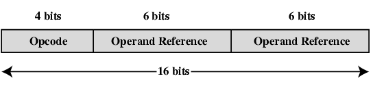
Number of Address(地址域)
- 分为如下几种类型:
- 3 addresses: Operand1, Operand2, Result.
- 例如, .
- 2 addresses: 地址之一同时作为源地址/目的地址.
- 例如, .
- 1 address: 采用隐含方式给出另一地址.
- 例如, 利用
LOAD指令, 将操作数存放至寄存器中.
- 例如, 利用
- 0 address: 所有地址均隐含, 使用栈(stack).
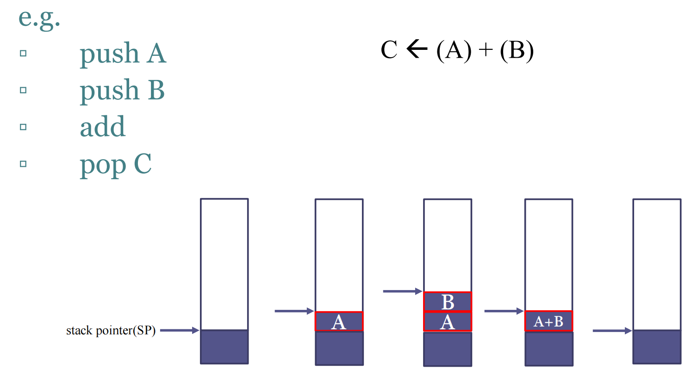
- 3 addresses: Operand1, Operand2, Result.
- 在0 address的情况下, 利用栈的操作顺序改变等式的写法, 这种写法称为postfix. (正常书写下的等式称为infix)
- 例如, .
- 随着地址个数的减少, 同一操作数所用的指令数更多.
- 地址数减少的影响:
- 复杂指令减少.
- 单程序指令多.
- 访问速度块.
- 地址数增加的影响:
- 更多复杂指令.
- 寄存器增加.
- 单个程序中指令更少.
- 可以节约内存空间, 但现代计算机已无此需求.
Design Decisions
- Instruction format:
- 指令长度.
- 地址个数.
- 地址域大小.
- 其他考虑因素: Registers, Addressing Modes, Data Types, ...
- 现有的指令集形式: Intel, ARM, RISCV(risk-5).
12.4 Types of Operation
- 可分为以下几种类型:
- Arithmetic(算数运算):
ADD, SUB, MUL, DIV. - Logical(逻辑运算): 与或非, 左/右移.
- Conversion(数据类型转换): Dec Bin.
- I/O:
IN, OUT. - Control: 转移控制指令
JMP, JZ等; 亦有系统控制指令. - Data Transfer(数据传输):
MOV, LOAD, STORE, DMA等.
- Arithmetic(算数运算):
- Privileged Instruction: Instructions that can only run in kernal mode.
- 即: 系统核执行的高权限指令.
- 例如: I/O instruction; set the timer; turn off all interrupts.
- 存储顺序:
- Big-Endian: 最低位MSB.
- 例如:
12345678H12 34 56 78.
- 例如:
- Little-Endian: 最低为LSB.
- 例如:
12345678H78 56 34 12.
- 例如:
- Big-Endian: 最低位MSB.
Ch13 Instruction Set: Addressing Modes and Format (寻址模式与指令格式)
注: 仅讨论寻址模式, 指令格式略.
13.1 Addressing Modes
- 符号说明:
- : 地址域中的值.
- : 寄存器.
- : 有效地址.
- : 偏移地址.
- : 对 地址取内容.
- 不同的寻址模式:
- Immediate Addressing(立即数寻址): .
- Direct Addressing(直接寻址): , 即 .
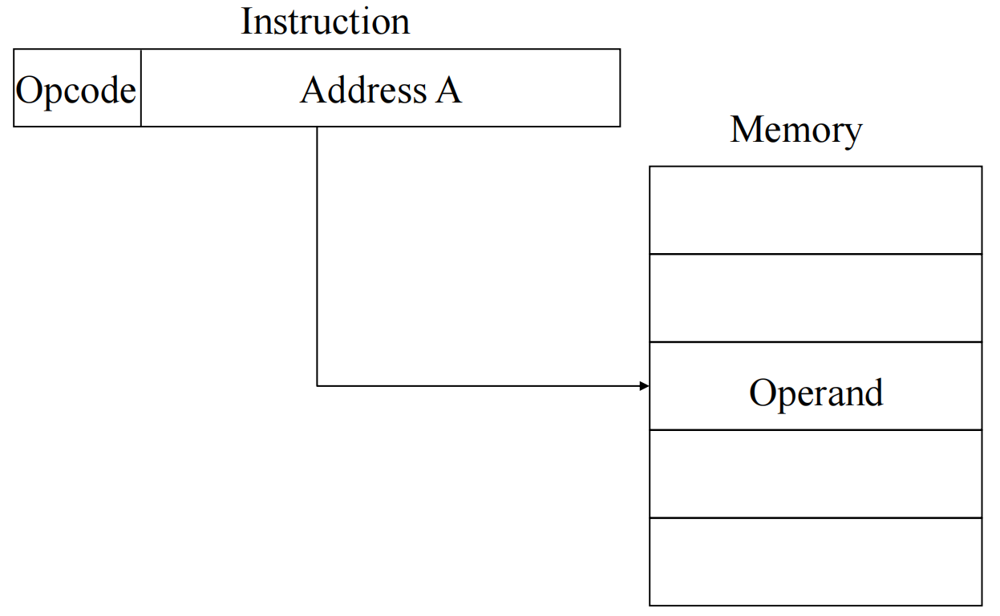
- Indirect Addressing(间接寻址): .
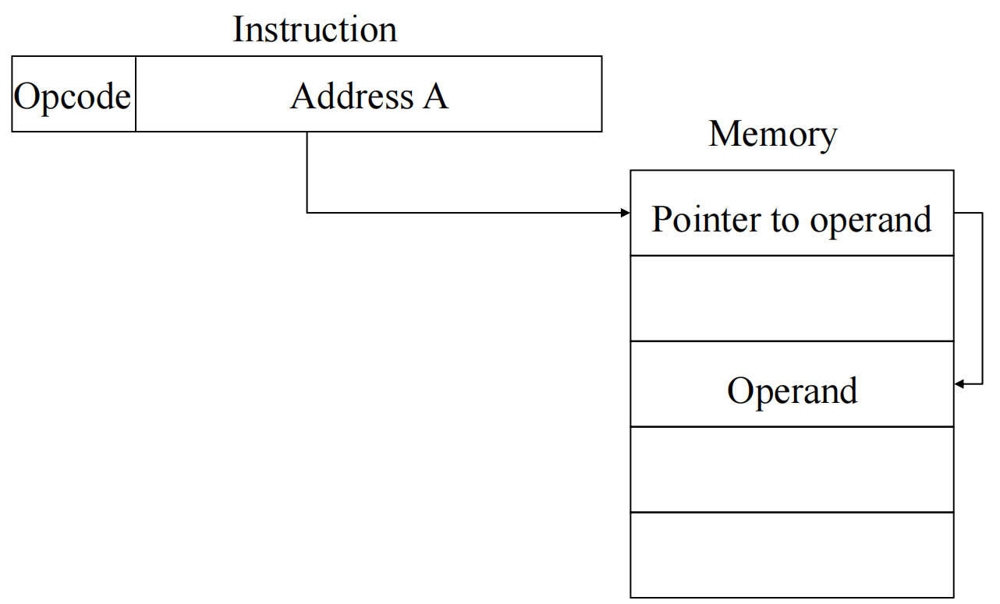
- Register Addressing(寄存器寻址): .
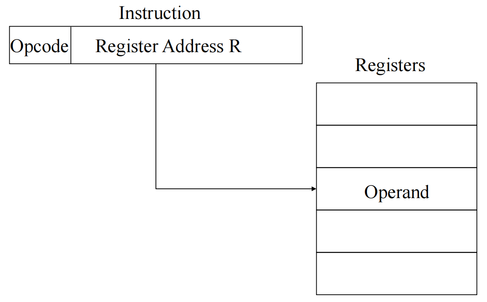
- Register Indirect Addressing(寄存器间接寻址): .
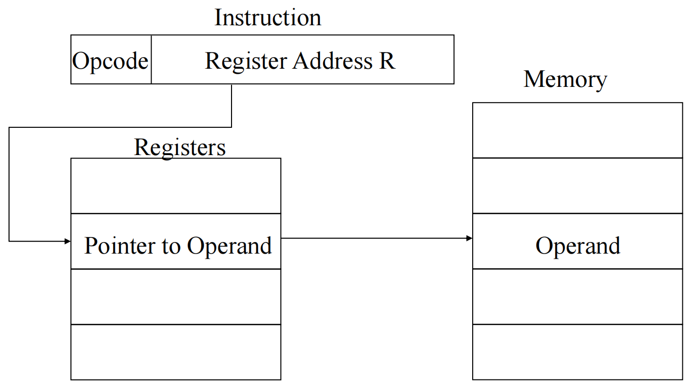
- Displacement Addressing(偏移量寻址): . 其中, 是偏移量, 还分为不同形式.
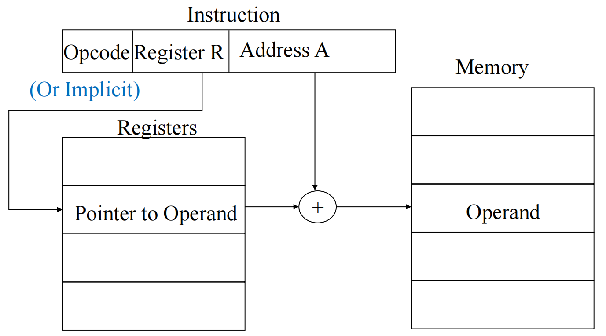
- Relative Addressing: . 为Program Counter, 其内容为地址偏移量, 可正可负.
- Indexed Addressing: , 在Autoindexing情况下, 有 .
- 间接寻址与indexing的组合:
- Postindex: .
- Preindex: .
- Stack Addressing(栈寻址): 等价于寄存器间接寻址.
Ch14 Processor Structure and Function
主要讨论处理器中的寄存器, 速度快, 造价高.
14.1 Processor Organization
- CPU的任务:
- Fetch Instruction Interpret(解释) Instruction.
- Fetch Data Process Data Write Data.
- 完成任务的过程中, CPU需要临时存储器.
- CPU Structure:
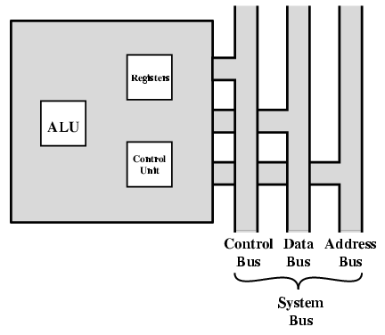
14.2 Register Organization
- 2类寄存器: User-Visible Register, Control and Status Register.
- 寄存器的性质:
- Top level of memory hierachy.
- Temporary storage of CPU.
- CPU寄存器设计决定了CPU的架构.
User-Visible Register
- General Purpose Register: 通用寄存器. (GP Register)
- 专用寄存器:
- 用于特殊操作. 如ECX用于数据计数.
- 数据寄存器: EAX, EDX.
- 地址寄存器: Segment Pointer, Index Register, Stack Pointer.
- 两类寄存器的特点:
- Generalized: 使用灵活, 但复杂性高.
- Specialized: 指令操作简便, 但功能单一.
- 寄存器数量:
- 通常使用 个寄存器.
- 寄存器越多, 寄存器域地址越长.
- Intel芯片使用8个GP Register, 而RISC(精简指令计算机)中使用上百个GP Register.
- 寄存器大小: 足够容纳完整地址(对于Address Register)或完整数据字(对于Data Register).
Condition Code Register(状态字寄存器)
- 性质:
- 用户部分可见, 是一部分独立bits的集合.
- 通过特殊指令可读取或改写内容.
- 不可直接对内容进行赋值.
- Register save and restore:
- When Subroutine(子进程) Call.
- 此时, 自动将寄存器内容临时存储. 在Recall回主进程时, 寄存器的内容自动返回.
- 对某些机器, 该过程需手动操作.
- 通过栈的
push, pop实现.
- 通过栈的
- When Subroutine(子进程) Call.
Control and Status Register
- 用户不可见的寄存器.
- 4个重要寄存器:
- Program Counter(PC): 存储当前指令地址.
- Instruction Register(IR, 指令寄存器): 临时存储最近读的指令.
- Memory Address Register(MAR, 内存地址寄存器): 接入地址总线, 用于输入内存地址.
- Memory Buffer Register(MBR): 接入数据总线, 是数据在内存域CPU之间的中转站.
- Supervisor Mode: 一种权限较高的模式.
- 亦称Kernel Mode.
- 通常由操作系统完成, 允许高等级指令.
- 用户 操作系统 Kernel Mode.
14.3 Instruction Cycle(指令循环)
- 几个步骤:
- Fetch: 取指令.
- Execute: 执行指令.
- Interrupt: 中断. (非必须)
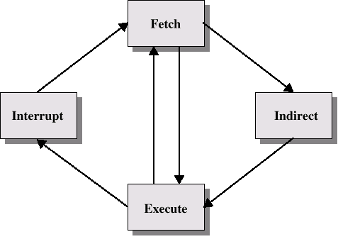
- 图中, Indirect与Interrupt均可去掉.
- Dataflow(以直接寻址的Fetch为例):
- MAR (PC).
- MBR (Memory). (Memory中的地址来自MAR)
- IR MBR.
- PC PC .
- 对于间接寻址的情况, 需增加 MAR (MBR) 的步骤, 因为第二次读MBR才可得到有效数据.
14.4 Instruction Pipelining(指令流水线)
- example(将指令视为仅有两个环节):

- 使用流水线可以减少指令的时间. 例如, 上述例子中可以将指令时间缩短一半.
- 条件:
- 指令时间等长. 若不满足等长条件, 则产生等待时间(Wait).
- 无分支. 若存在分支, 则无法读取下一条指令.
- Decompositon of Instruction Processing(6个基本步骤及其流水线):
- Fetch Instruction(FI).
- Deconde Instruction(DI).
- Cauculate Operands(CO).
- Fetch Operands(FO).
- Ececute Instruction(EI).
- Write Operand(WO).
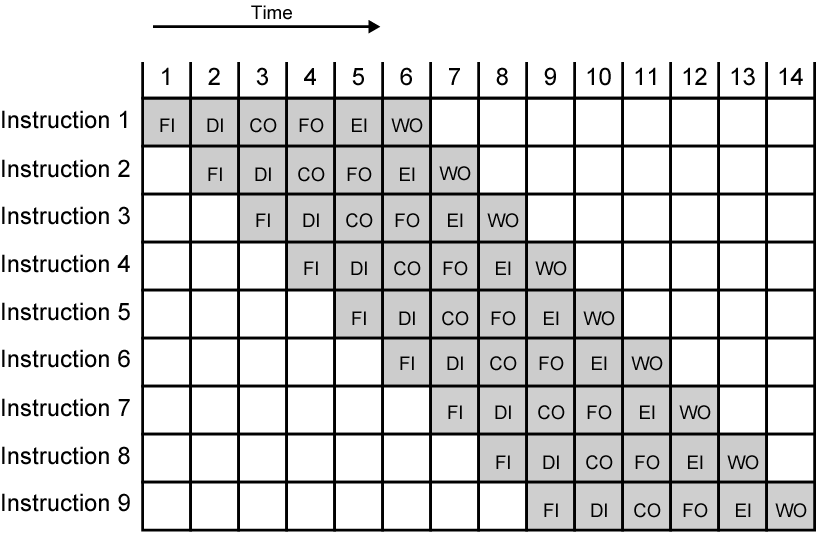
- 包含Branch的情况(含有跳转指令):
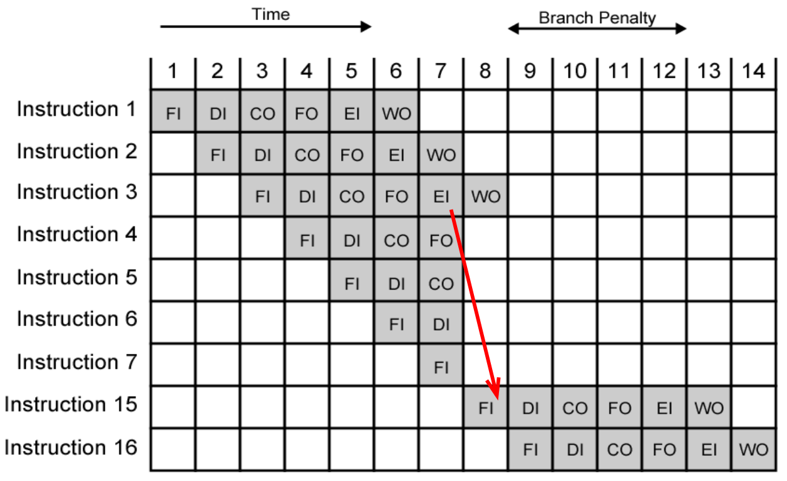
- 在EI处判断出转移指令的位置. 同时, 产生了4个无效指令.
- 流水线时间由最长阶段时间决定.
- cycle time: .
- 其中, 为锁存时间.
- 认为在指令流水线中, 所有阶段的时间均为 .
- 流水线性能: 设流水线分为 个阶段, 程序有 条指令. (且程序中无branch)
- 流水线总工作时间: .
- 速度提升因子(speedup factor): .
- , 为无流水线时的工作时间.
- 时, , 即存在渐近线.

- 各阶段时间不同的情况:
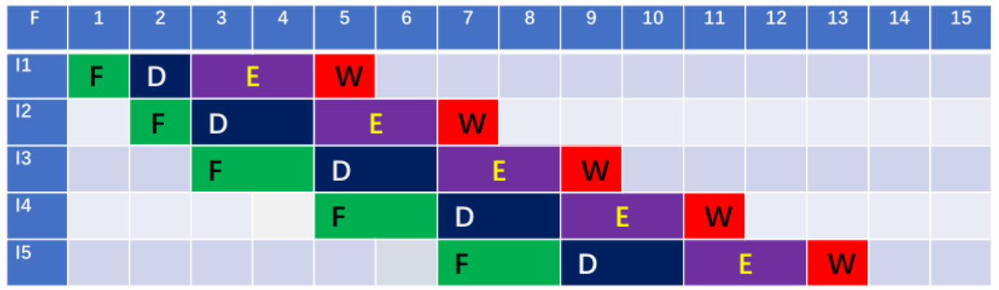
- 假设4个阶段, E花费两个时间单位, 其他阶段均花费1个时间单位.
- F, D需等待E执行完毕.
- Pipeline Hazard(对流水线有害的因素): 会造成流水线暂停(pipeline bubble).
- 资源冲突(Resource Hazard, 亦称 Structure Hazard): 计算机资源不足, 需要进行等待.
- 例子: 若计算机仅一个端口, 则FO与FI无法同时进行, 产生了时间滞后.
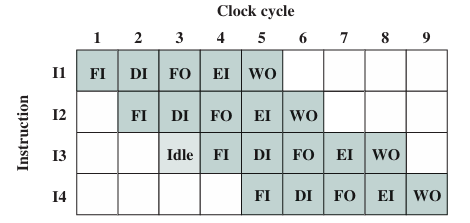
- 例子: 若计算机仅一个端口, 则FO与FI无法同时进行, 产生了时间滞后.
- 数据冲突(Data Hazard): 无法取到数据.
- 例如, 前后指令之间存在数据依赖, 则FO需要等待上一指令的WO完毕后才可继续.
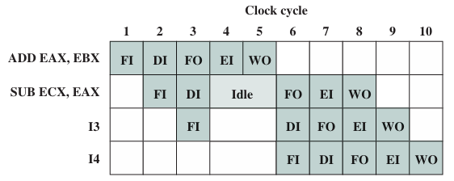
- 例如, 前后指令之间存在数据依赖, 则FO需要等待上一指令的WO完毕后才可继续.
- 控制冲突(Control Hazard): 由于Branch造成的冲突.
- 资源冲突(Resource Hazard, 亦称 Structure Hazard): 计算机资源不足, 需要进行等待.
Dealing with Branches
共有5种方法.
- Multiple Streams(多数据流): 遇到branch时, 复制一条流水线.
- 若有多个branches, 则复制多条流水线.
- 需要计算机包含多个流水线所需的资源.

- Prefetch Branch Target(预先读入Branch目标): 提前读入Branch中的目标, 在执行时判断是否需要.
- Loop Buffer(循环缓存): 将循环的指令存入缓存(small, fast memory).
- Loop Buffer仅预取指令, 不存数据, 其容量比cache更小.
- Branch Prediction(分支预测): 分为两种方法.
- 静态预测(Static Prediction): 预测过程与结果无关.
- Predict never taken: 不认为会转到branch上.
- 即: 假定指令总按顺序执行, 前述产生无效指令的情况即该策略.
- Predict always taken: 总认为会转到branch上.
- 可能产生page fault(内存页错误), 产生巨大时间浪费, 因此不常使用.
- Predict by opcode: 根据操作码预测.
- Predict never taken: 不认为会转到branch上.
- 动态预测(Dynamic Prediction): 预测与之前的运行结果有关. 准确率高, 通常可达80%.
- 1 history bit: 预测结果=上次结果.
- 对循环而言, 仅初始/末尾会造成错误.
- 2 history bits: 遵循状态图如下:
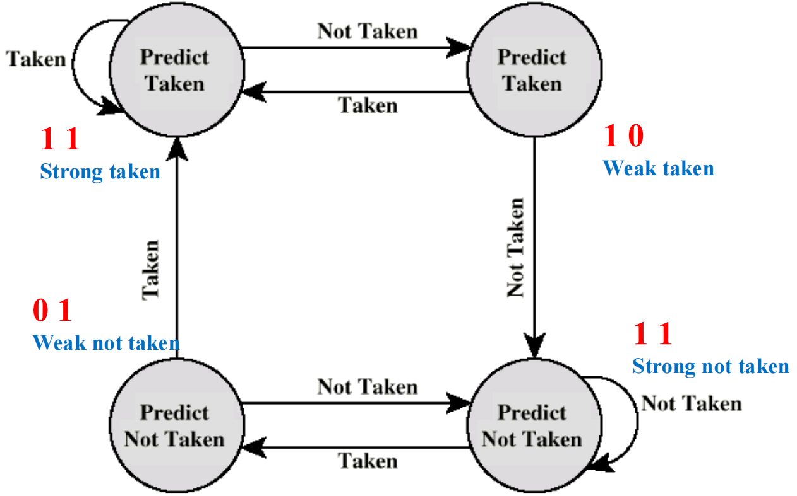
- Branch history table: 存放指令地址, branch target, history bit. 通过查表可减少预测的时间.
- 1 history bit: 预测结果=上次结果.
- Delayed Branch: 在下一部分中介绍.